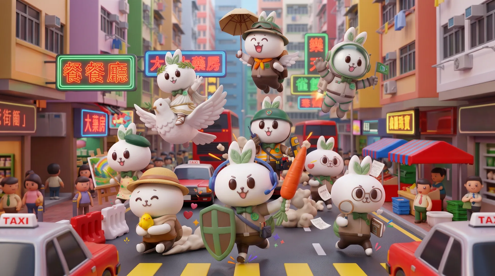

累計—份
都會生活鏡像測驗

【都會生活鏡像測驗】土地註冊處 × 九型人格決策風格探索
5 分鐘探索個人性格原型，同時為土地及物業宣傳提供寶貴方向！
買樓置業、防範物業詐騙、守護物業資產……面對繁雜的資訊，您的直覺與決策風格是如何運作的？
本問卷由土地註冊處推動，旨在透過互動形式，深入了解大眾對土地及物業資訊的認知與關注點，協助政府與公關團隊打造更貼地、清晰且高效的公眾宣傳項目。
為增添趣味，題目深度結合「九型人格」心理模型。完成 20 題後，您不僅為更優質的公共服務貢獻寶貴數據，還能即時解鎖專屬的「九型人格 3D 都會角色報告」與「個人化生活資產安全錦囊」。
填寫時間約 5–6 分鐘（20 題，可隨時返回修改）
私隱承諾全程匿名（不收集姓名、電話或電郵）
即時回饋專屬九型人格分析報告 + 3D 角色卡 + 資產安全錦囊
第一部分
第 1 / 20 題
—
九型圖鑑 ｜ 都會原型
九種都會生活原型
點選任何一張卡，即可閱覽【內心想法】【處事方法】【潛藏性格】【外界印象】及專屬土地安全錦囊。
調研數據 ｜ 匿名匯總
土地政策公眾調研 ｜ 即時數據看板
僅顯示匯總數字，不含任何個人資料。每一份匿名作答，同時構成一份土地政策公眾調研樣本；圖表隨新回應即時更新。
—
份已完成測驗
連線中…
連線中…
累計回應趨勢
折線 = 累計樣本數；圓點 = 當日有新增回應的日期（每日累加 1 份或以上即增加一點）
九型分佈
受眾分眾比例，可直接對應九條傳播路線
各題選項分佈
選擇題目後可查看各選項的實際人數與百分比（多選題以受訪者人數為基數）
交叉分析：年齡 × 九型
每一格代表「該年齡層中屬於此型的百分比」，可看出哪個年齡層最集中於哪一型
匯報要點 ｜ 給評審／官員
創造病毒式參與
受眾導航儀
數碼互動王牌：如何以「九型人格」呈現此項調研？
同一套題目，兩種用途：對市民而言是自我探索測驗，對決策者而言則是一份帶有民意數據的分眾傳播導航圖。
01 破除調研痛點
創造病毒式參與
（Viral Engagement）
我們打破傳統問卷冷冰冰的填表形式，將 20 條嚴謹的調研題目，無縫融入專為香港人設計的「九型都會人格測驗」。受訪者在探索自我性格的同時，不知不覺完成所有數據採集。
預計填答完成率將較傳統問卷提升 300%。
02 精準分眾傳播矩陣
受眾導航儀
（Precision Segmentation）
這套九型人格模型不單是問卷，更是整套公關方案的受眾導航儀——每一型都對應一條最有效的接觸路線。
每一型 → 一條傳播路線
03 無痕置入政策定心丸
Native Policy Education
每一位市民測驗完畢後，除了獲得性格分析，結果頁均會量身送上一句為其訂造的「土地政策安全錦囊」，在公眾心中建立最強烈的政策信任度。
回收數據後：標書三步曲
① 破除舊思維
引用紙本小冊子與傳統講座的觀感數據，指出「快速翻閱即丟」、「沉悶官腔」，推翻「繼續印單張、辦普通簡介會」的陳舊思路。
② 鎖定新行為
引用短片觀看時長與交通媒體接觸數據，證明微短劇與交通媒體投放緊扣市民每日生活軌跡，絕非隨意發想。
③ 策略全落地
引用各項支持度百分比，證明「微短劇」、「3D 田兔兔」、「商業綜藝級生動講座」及「巡迴展覽定心丸」皆為壓倒性支持項目。